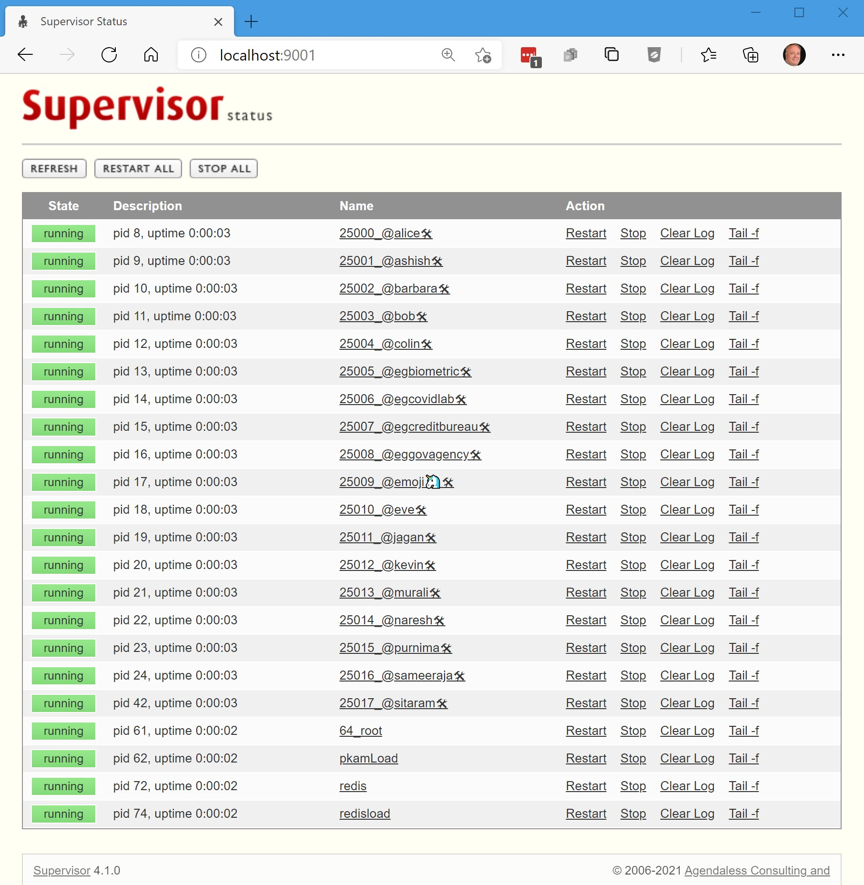
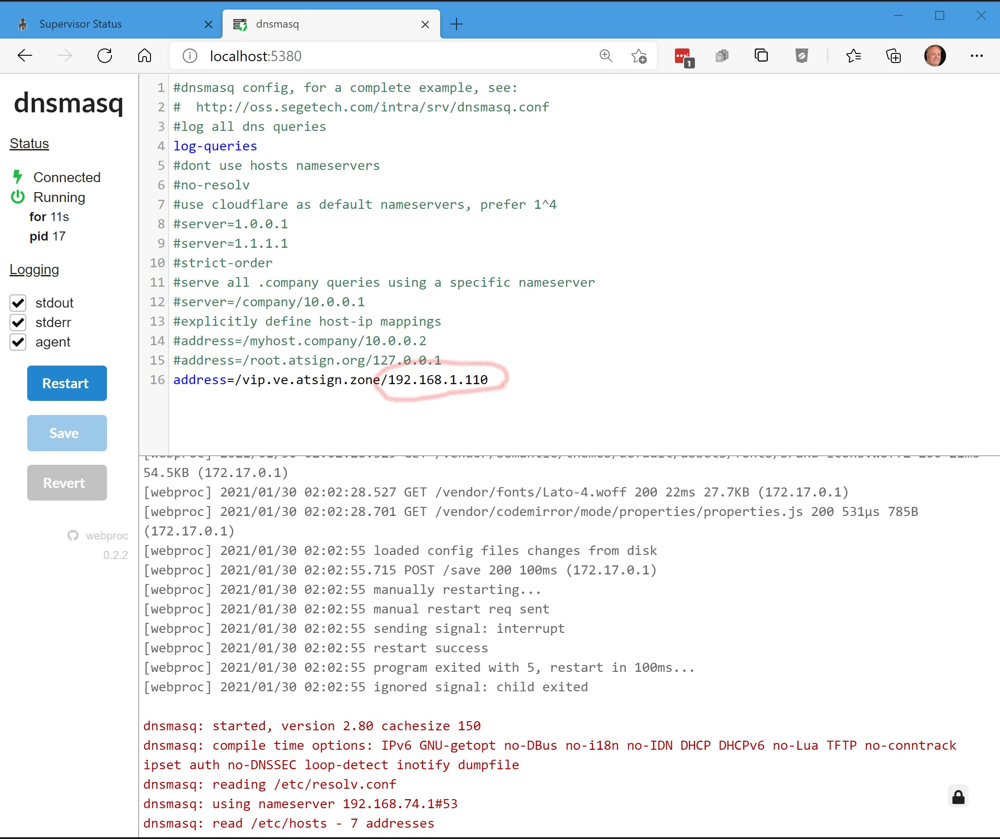

As the heart of the @platform, we developed the @protocol in Dart, a powerful language that can be used to develop mobile apps with Flutter, Google’s increasingly popular UI software framework. If you are new to Flutter or Dart, no problem! Many of our first developers knew nothing about these languages coming in. For guidance on Flutter installation and development, please visit flutter.dev. Regardless of your coding knowledge, we recommend that you begin with “Getting Started.”
We’re excited to help you get your very own @platform environment up and running! As a prerequisite, you will need Flutter/Dart installed on your machine. If you haven’t already, please follow the “Getting started” steps on flutter.dev before you proceed.
Important note: Flutter works best with Android Studio, but you can also use Intellij or Visual Studio Code as your IDE.
Our Co-Founder and CTO, Colin Constable, has a message for you!
curl -L atsign.dev/curl/rc.local -o setvip.sh
sudo ip addr add 10.64.64.64/32 dev lo
sudo nano /etc/rc.local
If the file “/etc/rc.local” is empty, then add the contents of the file “setvip.sh” to /etc/rc.local”. If rc.local already has content, then add the line “ip addr add 10.64.64.64/32 dev lo” above any lines that say “exit 0”. This will ensure that the virtual IP is in place even after a reboot. Ensure the permissions are correct with the following command.
sudo chmod 744 /etc/rc.local
Make a new directory called “ve” and run the curl command inside of it:
cd ~
mkdir ve
cd ve
curl -L atsign.dev/curl/virtualenv-compose-vip.yaml -o docker-compose.yaml
Now you are ready to spin up the docker containers:
docker-compose up -d
Okay, you're up. Now you can check the http://localhost:9001/.
docker-compose down
docker-compose pull
docker-compose up -d
Use Windows Update to make sure you are on the latest version of Windows 10.
Ensure you BIOS is enabled for virtualization, Google to see how to do this for your PC hardware
Install the Microsoft loopback adapter and configure it. The video showing how to do that is here:
mkdir ve
cd ve
curl -L atsign.dev/curl/virtualenv-compose-vip.yaml -o docker-compose.yaml
Now you are ready to spin up the docker containers:
docker-compose up -d
Okay, you're up. Now you can check the http://localhost:9001/.
docker-compose down
docker-compose pull
docker-compose up -d
sudo curl -L atsign.dev/curl/atloop.plist -o /Library/LaunchDaemons/atloop.plist && \
Once you enter the above command, an arrow “>” should show up to enter the next line:
sudo launchctl load /Library/LaunchDaemons/atloop.plist
The command line may ask you to enter your password. Go ahead and fill it in if this happens.
Make a new directory called “ve” and run the curl command inside of it:
mkdir ve
cd ve
curl -L atsign.dev/curl/virtualenv-compose-vip.yaml -o docker-compose.yaml
Now you are ready to spin up the docker containers:
docker-compose up -d
Okay, you're up. Now you can check the http://localhost:9001/.
docker-compose down
docker-compose pull
docker-compose up -d
Congratulations! You’ve set up your virtual environment and can now experiment with the hello_world app. Now you can start building your very own privacy-conscious apps.
When writing code, the only change needed to run in the virtual environment is changing the ROOT_DOMAIN to
point to vip.ve.atsign.zone. The production value is root.atsign.org.
To get a feel for what an @platform app looks and runs like, clone the at_hello_world repository to your machine. This repo, which contains both a complete and incomplete version of the at_hello_world app, includes some of the most common @protocol verbs and methods such as get, getKeys, and put. Learning these verbs will solidify your understanding of how to begin developing your own application. For instructions on how to run the Hello_World application, please watch the video below:
We’d love to support you as you embark on your app development journey. To connect with other likeminded developers, feel free to join our Discord as well as our @developers Google group. We’ve also compiled various documentation, guides, and samples that you might find helpful.
In the near future you’ll also be able to sign up for our @dev program, which offers certification and commissions for your app. Learn more about our @dev program.
You can now use a browser to see the state of the system.
This URL will open a dashboard of all the services running on your local virtual environment:
http://localhost:9001Should look like this:

This shows the full @platform stack running in a single container. You can also look at the log files of each
container and restart anything if you want to. The redisload runs after 10 seconds or so and populates the
redis database so you don’t have to.
As you might have seen in the video, we’ve made it easy to identify @platform-related bugs by providing an interface to check on the status of your servers.
For details on your testable @signs, check out: http://localhost:9001/
If anything breaks, you can always hit the Restart all button in the web page or just kill and restart the Docker containers with docker-compose down.
If you are unsure about the instructions below, then you might want to stick with the emulated devices on your machine, as these settings can be tricky.
If you would like to test apps on physical devices and point them to your VE, it is possible to do that with a couple of configuration changes. The VE also includes a DNS masquerading server which can serve DNS and point the DNS address vip.ve.atsign.zone to the hosting PC/MAC/Linux machine. First you need to enable the DNS Masq service in the docker-compose.yaml by uncommenting the needed lines and re running docker-compose up. Then, you need to find the IP address of your machine. This can be achieved with ifconfig/ipconfig or the ip command on linux. Once you know the IP address of your machine, you can configure the DNS masq with that IP address as shown below.

For details on your local DNS Masq server, check out: http://localhost:5380/
Once you have that configured, hit the save button and you can configure your mobile device to “point” to the DNS server running on your host. On Android that is configured in the WiFi settings and on IOS in settings under “configure DNS”.List of Testable @signs: